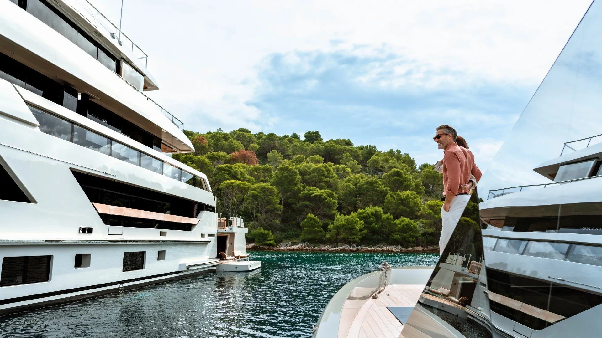
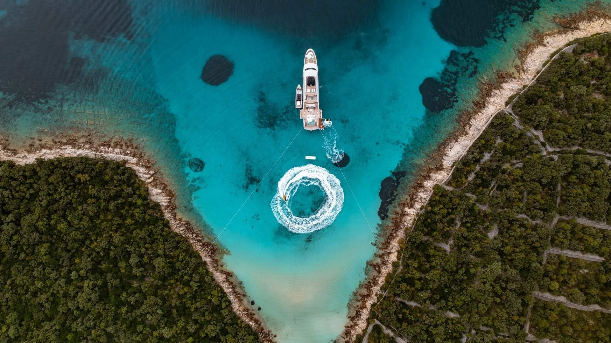
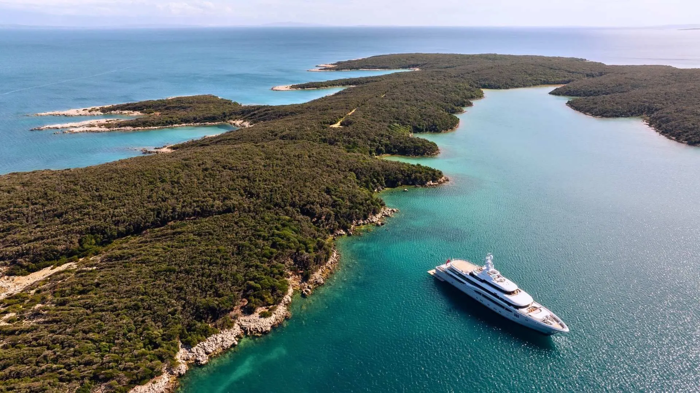
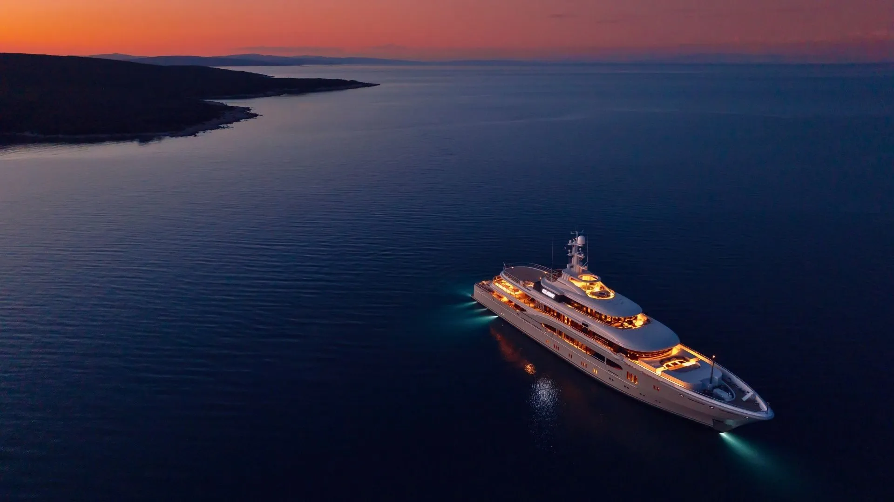
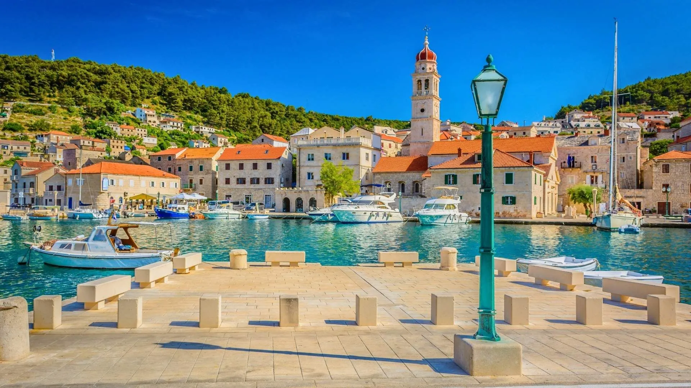
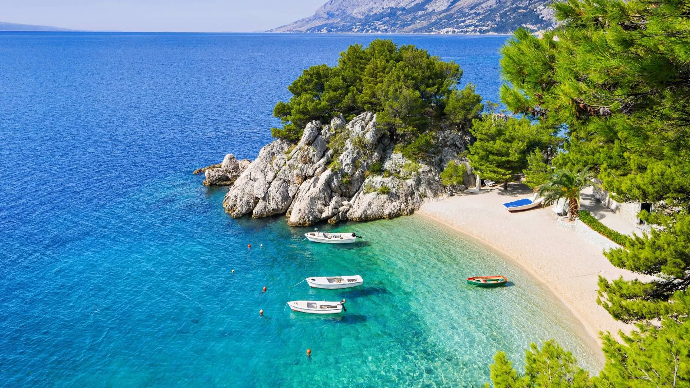

Yacht Charter Guide 2026: The Best Things To Do In Croatia
With over 1,000 islands to choose from, Croatia has undoubtedly become a popular luxury yacht charter destination, ideal for a Mediterranean summer vacation. The country offers a combination that is perfect for a single yacht charter itinerary, featuring secluded anchorages, vibrant beach clubs, UNESCO World Heritage sites, and outdoor pursuits in its national parks.

IYC Insider: What You Need To Know Ahead Of A Yacht Charter In Croatia
Croatia is the perfect destination for a yacht charter for endless reasons. Accessed easily by yacht, the Adriatic coastline has over 1,200 islands to explore from yachting hubs such as Split and Dubrovnik.

Timeless Treasure: The Top 5 Archaeological Sites To Explore In Croatia
From ancient Roman capitals to stone forums, Croatia's coastline has an impressive history. Once a prized region of the Roman Empire, the popular Mediterranean destination is now home to Europe's most atmospheric archaeological sites, many of which can be explored easily from a luxury yacht charter.

After Dark: The Best Islands In Croatia For Nightlife
The Adriatic coastline of Croatia's must-visit islands not only offer crystal-clear waters and calm anchorages but also a thriving nightlife scene. Exploring the islands by day welcomes picturesque beaches, bays ideal for watersports, and plenty of opportunities to explore the history, culture, and dining scene ashore.

Arts And Crafts: Explore Croatia's Most Authentic Traditions
In Croatia, it's not just the celebrated coastlines and ancient cities that make it a top Mediterranean destination to visit, but also the centuries-old traditions that are still present. Across the country, these are still very much alive, preserved by artisans who've continued their crafts over the years.

Croatia's Hidden Beaches Perfect for Yacht Adventures
Croatia's Adriatic coast has long been spotlighted for its clear waters, ancient walled towns, and pebble beaches surrounded by olive groves and pines. But for those who want to explore the lesser-known areas and quieter spots, there are plenty of untouched beaches only accessible by boat.